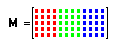

Reading and Writing Image Files |
READ_IMAGE("file") Creates an array containing a grayscale representation of the image file.
READBMP("file") Creates an array containing a grayscale representation of a bitmap format image file. (deprecated)
READRGB("file") Creates an array containing a red-green-blue packed matrix representation of the image file.
READ_RED("file"), READ_GREEN("file"), READ_BLUE("file") Create an array containing only the red, green, or blue component from a color image file.
WRITEBMP("file", [M]) Creates an grayscale bitmap image file. This function can be used either on the right or the left side of the definition operator. When used on the right, you must supply the argument M, the name of the matrix to write to the file. In this case, the function returns 0. When used on the left, do not supply the argument M, but instead place it on the right hand side of the definition.
WRITERGB("file", [M]) Creates an 16-million-color bitmap image file. This function can be used either on the right or the left side of the definition operator. Notes for WRITEBMP apply.
READ_HLS("file") Creates an array containing a hue, lightness, and saturation representation of the image file.
READ_HLS_HUE("file"), READ_HLS_LIGHT("file"), READ_HLS_SAT("file") Extract only the hue, light, or saturation component from a color image.
READ_HSV("file") Creates an array containing a hue, saturation, and value representation of the image file.
READ_HSV_HUE("file"), READ_HSV_SAT("file"), READ_HSV_VALUE("file") Extract only the hue, saturation, or value component from a color image.
WRITE_HSV("file", [M]) Creates an 16-million-color bitmap image file. This function can be used either on the right or the left side of the definition operator. Notes for WRITEBMP apply.
WRITE_HLS("file", [M]) Creates an 16-million-color bitmap image file. This function can be used either on the right or the left side of the definition operator. Notes for WRITEBMP apply.

The first n columns represent the red component of the n x m image. The second and third sets of n columns represent the green and blue components of the image. HSV or HLS images are also stored in packed format.